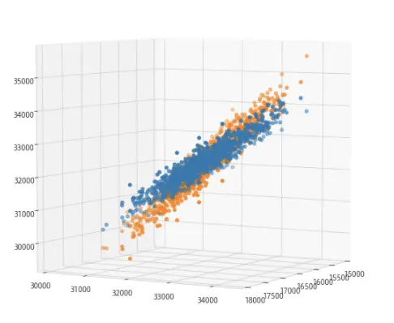

CUPED（Controlled-experiment Using Pre-Experiment Data）是一种通过联系实验前数据，让方差变小的方法。
目的(what)
通过数据变换，得到更小的方差。
为什么要减小方差(why)
A/B实验结果取决于实验组方差（var）、效果（\(\Delta\)）:
\[t = \frac { \Delta }{var(\Delta) } = \frac { \bar { Y_{ t } } - \bar { Y_{c} }}{\sqrt {var(\bar {Y_t} - \bar {Y_c}) } }\]
var变小，会让结果更加容易被检测出来。
方法(how)
1. 思路
构建\(\Delta^*\)，满足：
- \(\Delta^*\)与\(\Delta\)一样，是\(E(Y_t - Y_c)\)的无偏估计；
- \(\Delta^*\)相对\(\Delta\)，方差更小。
使用\(\Delta^*\)来评估实验效果，效果相似，方差变小。
2. 原理
如果有另一随机变量\(X\)，并且已知\(E(X)\)。则有互相独立的二维随机变量\((X_i, Y_i)\)，定义：
\[\hat{ Y }_{ cu } = \bar{ Y } - \theta \bar{ X } + \theta E(X)\]
由于$E( E(X) - { X } ) = 0 \(，所以\)_{cu} \(是\)E(Y)$的无偏估计，则
\[ var( \hat{Y}_{cu} ) = var(Y - \theta X) / n = \frac {1} {n} (var(Y) + \theta^2 var(X) - 2\theta cov(X,Y))\]
当\(\theta = cov(X,Y) / var(X)\)时，$var(_{cu}) $的值最小（最小二乘法），此时：
\[var (\hat{Y}_{cu}) = \frac {1}{n}(var(Y) - cov(X,Y)^{2}/var(X)) = \frac{var(Y)}{n} (1 - \frac { cov(X,Y)^{2}}{var(X)var(Y)}) = var ( \bar{ Y } ) (1 - \rho ^{2} ) \leq var( \bar { Y })\]
\(X\)与\(Y\)的相关系数越大，得到的方差越小。
3. 扩展到A/B
如果选择的\(X\)不会被实验干扰，则$ E( X ^ {t} ) - E( X ^ {c} ) = 0\(， 实验组、对照组在零假设下还有**相同的\)$**，得：
\[\Delta_{cv} = \hat {Y}_{cu} ^{t} - \hat{Y}_{cu}^{c} = ( \bar {Y}_{cu} ^{t} - \bar {Y}_{cu}^{c} ) - \theta(\bar{X}_{cu}^{t} - \bar {X}_{cu}^{c}) + \theta (E( X ^ {t} - X ^ {c} ) ) = \Delta - \theta \Delta _ { x } \]
得到 \[var(\Delta_{cv}) = var(\Delta)(1-\rho ^2)\]
微软的实践经验
1. 选择协变量(X)
选择相关系数更大的协变量，效果更好。微软的建议：
- 选择实验运行之前的指标数据最好；
- 实验之前指标数据的时间粒度越长，效果越好；
- 实验运行周期并不是越长越好。
实验前数据并不是X得唯一选择，只要是不会被实验干预影响的变量，都可以选择。比如用户加入实验的日期。
2. 实验前数据缺失(\(Yi\)对应的\(Xi\)不存在)
新用户或太久没回归的用户，可能没有旧的记录。可以对缺失的数据，补为适当的值。
结语
本文简单介绍了CUPED这种强大的方法，合理的使用可以大大增加实验的敏感度。
仅做简单介绍、总结，实践细节可参阅相关资料。
思考：CUPED与线性回归
CUPED方法其实就是控制变量法，而且效果也等同于回归分析。
默认算法对应的回归分析： \(Y = \beta_0 + \beta_1 * t + \epsilon\)
CUPED算法对应的回归分析： \(Y = \beta_0 + \beta_1 * t + \beta_2 * X + \epsilon\)
举例：CUPED算法(蓝色)在z轴上的波动相对默认算法(黄色)明显变弱 